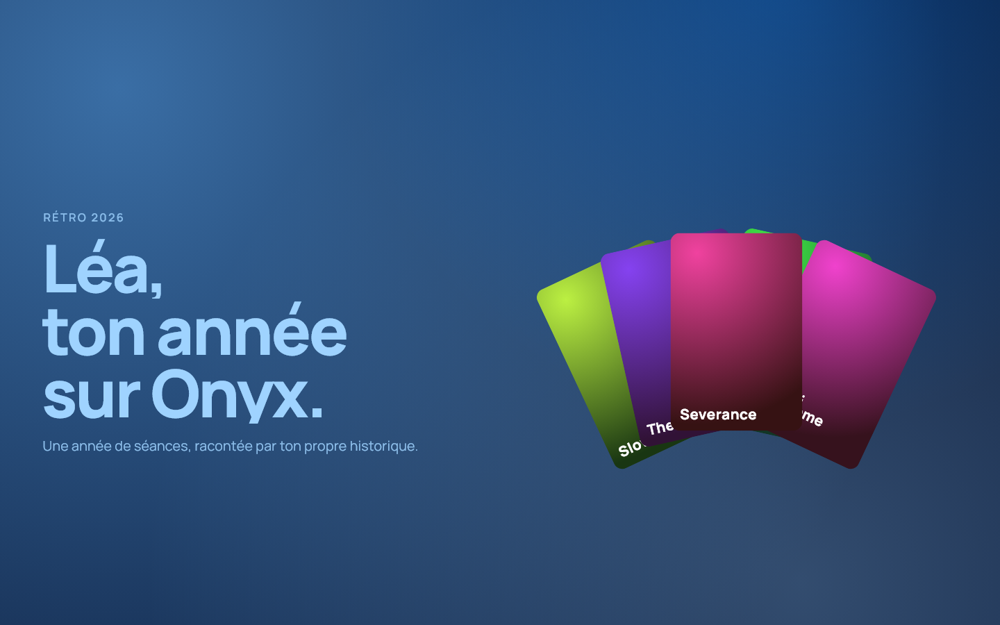
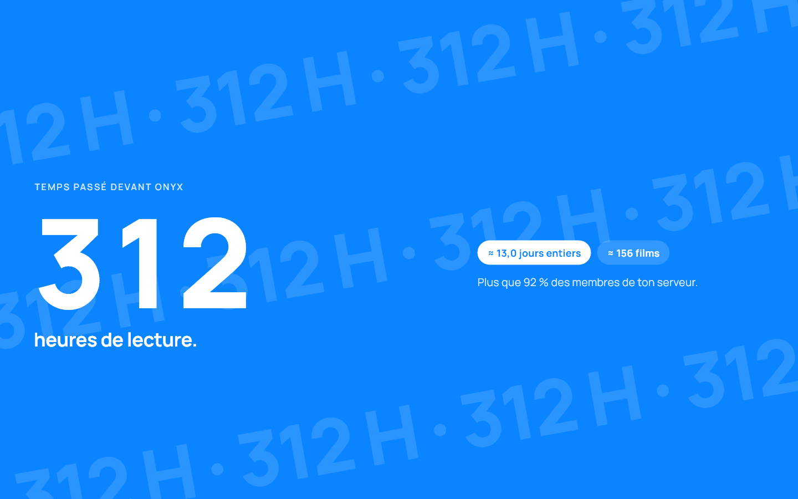
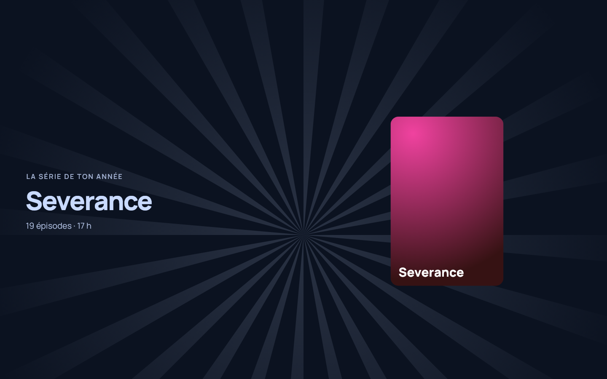
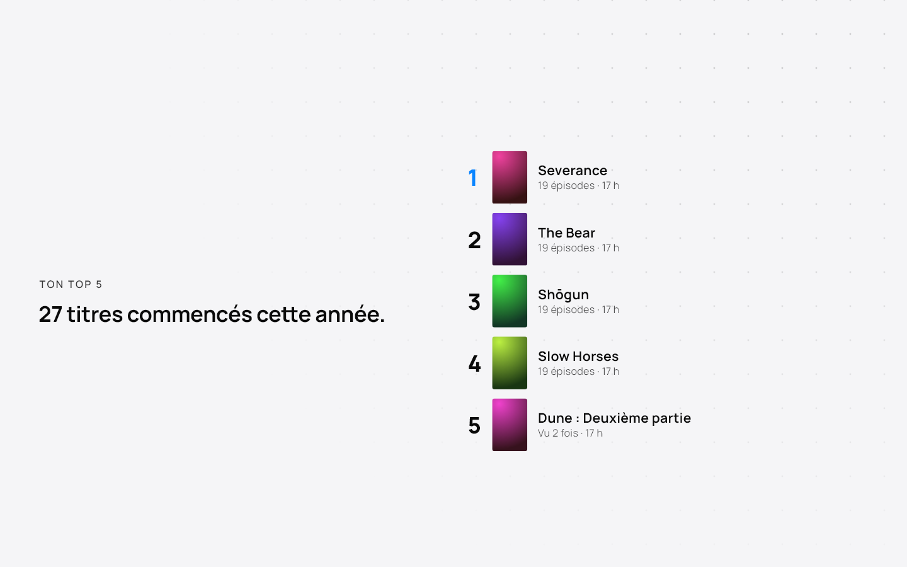

Chaque écran est montré au format d'un PC (16:10). L'onglet Actuel est le vrai rendu de l'app aujourd'hui ; A et B sont deux pistes. Les animations se rejouent à chaque changement d'onglet.




Sur le fond, la correction vaut pour les dix écrans : en paysage, les tailles se calculeraient sur la largeur et la hauteur ensemble, et chaque écran poserait ses éléments contre les bords au lieu de les centrer dans une bande. Le téléphone ne change pas, sauf la couleur du top 5 et du temps passé.